AI Academy · Level 4 · Grade 9 · Week 16 · Student lesson
Accuracy and Imbalance
Learn to understand, design, build, test and explain AI systems responsibly.
Project: Responsible Plant Classifier
Before you start
Week 10: a majority baseline may miss every rare positive.
Plan time to read, investigate and explain. Keep predictions separate from observations.
Student lesson · 1 of 17
Your mission
Your learning target
I can explain why overall accuracy can hide failure on a less common class.
I can compare a training-majority baseline with class-specific results.
I can calculate an equal-class average and report its limits alongside the confusion matrix.
Remember before reading
Close your notes first. A rough first answer helps us choose the right starting point; it is not a score for your ability.
Without opening the old lesson, explain one key idea from Confusion Matrix. Give an example and a mistake that the idea helps you avoid.
Without opening the old lesson, explain one key idea from Train a Classifier. Give an example and a mistake that the idea helps you avoid.
Without opening the old lesson, explain one key idea from Baselines First. Give an example and a mistake that the idea helps you avoid.
After trying, check the relevant lesson or ask your teacher. Change the part of your explanation that the evidence shows was wrong.
Accuracy can be dominated by a common class and hide failure on a rare but important class.
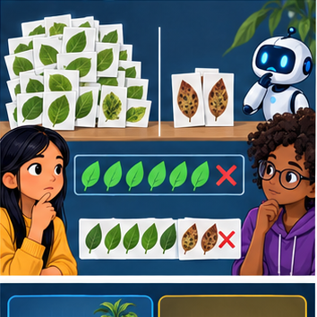
Builder name and experiment date:
Readiness for the connected explanation
With reference rows and prediction columns ordered clear then blocked, where are false negatives when blocked is positive?
This week’s end goal
By the end, I can explain accuracy and imbalance using a traced example and a stated limitation.
Student lesson · 2 of 17
Notice the evidence
PICTURE ENTRY
Notice → Predict → Explain
Begin with visible evidence; do not explain more than the picture and information support.
Name three visible details without interpreting them.
Predict the data, model, or evaluation decision being made.
Identify one hidden assumption that could change the result.
State what evidence would confirm or reject your prediction.
My prediction and supporting evidence:
A closer explanation
Accuracy counts all correct predictions and divides by all evaluated examples. Each example has equal weight, so a common class contributes more to the score. A high result can hide failure on a rare class. This week keeps the confusion matrix visible and checks both classes separately.
New fictional training data has 16 clear and 4 blocked labels. Its majority baseline predicts clear for every query; choose that rule from training, not evaluation labels. A separate evaluation set also contains 16 clear and 4 blocked cases. A frozen candidate and the baseline are evaluated on the same 20 records.
| Method and reference row | Predicted clear | Predicted blocked |
|---|---|---|
| Baseline reference clear | 16 | 0 |
| Baseline reference blocked | 4 | 0 |
| Candidate reference clear | 12 | 4 |
| Candidate reference blocked | 0 | 4 |
Rows are references and columns are predictions, ordered clear then blocked. Blocked is positive. Both methods get 16/20=80 percent accuracy. The baseline misses all four blocked cases. The candidate finds all four but falsely flags four clear cases. The same score conceals a different tradeoff.
Student lesson · 3 of 17
See how it works
ML MECHANISM
Input → Model → Evidence
Trace the information, fitted behavior, and evaluation proof separately.
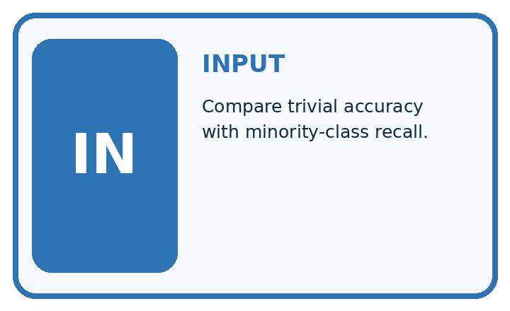
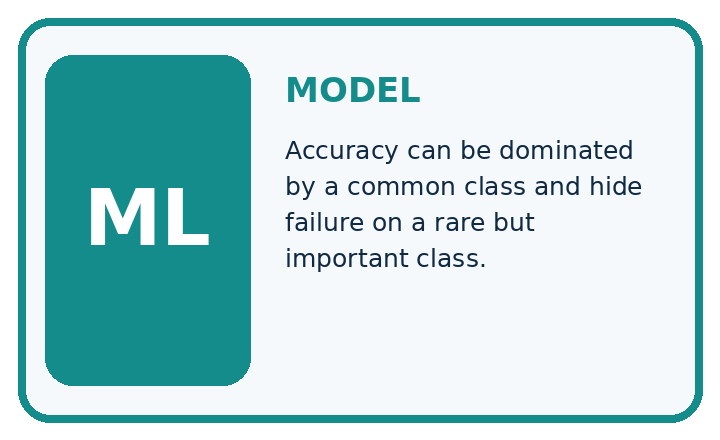
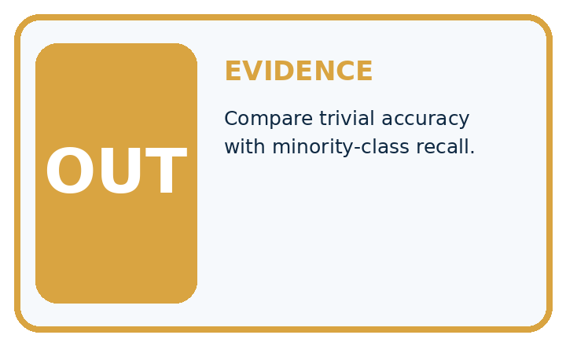
QUESTION Compare trivial accuracy with minority-class recall.
MODEL IDEA Accuracy can be dominated by a common class and hide failure on a rare but important class.
PROOF NEEDED Use an unseen case, visible calculation, error analysis, and a stated limitation.
Draw a fresh data → model → prediction → evaluation trace:
A closer explanation
def scores(counts):
clear_n = sum(counts[0])
blocked_n = sum(counts[1])
if clear_n == 0 or blocked_n == 0:
raise ValueError("Need evaluation examples of both classes")
correct = counts[0][0] + counts[1][1]
accuracy = correct / (clear_n + blocked_n)
clear_fraction = counts[0][0] / clear_n
blocked_fraction = counts[1][1] / blocked_n
balanced = (clear_fraction + blocked_fraction) / 2
return accuracy, balanced
baseline = [[16, 0], [4, 0]]
candidate = [[12, 4], [0, 4]]
for name, counts in [("baseline", baseline), ("candidate", candidate)]:
accuracy, balanced = scores(counts)
print(name, round(100 * accuracy, 1), round(100 * balanced, 1))The output is baseline 80.0 50.0, then candidate 80.0 87.5. In each output line the first percentage is ordinary accuracy and the second is balanced accuracy. For the candidate, the clear-class correct fraction is 12/16=75 percent and the blocked-class fraction is 4/4=100 percent. Their equal average is 87.5 percent.
For the baseline, those fractions are 16/16=100 percent and 0/4=0 percent, averaging 50 percent. The code assumes a two-by-two table of nonnegative integer counts in the stated order. It stops when either reference class is absent. Then report the observed counts and the unavailable class result; do not invent a denominator or silently substitute zero.
Connect the picture and the explanation
Point to the input, the deciding step and the result in this week’s visual. Explain the same step in ordinary words. A picture helps when you can say what each part represents.
Student lesson · 4 of 17
Compare the cases
EVALUATION DESIGN
Four Tests, Four Kinds of Evidence
A system is not understood until it survives more than one comfortable example.


NORMAL Expected data and expected behavior.
BOUNDARY Value close to a threshold, ambiguous label, or uncertain prediction.
MISSING Necessary field, label, source, or measurement is unavailable.
SHIFTED New lighting, species, device, subgroup, or time condition.
Which case most threatens today's claim, and why?
Change one thing in the pictured case
Change: The candidate’s three false alarms are corrected without changing its detections.
Prediction: Candidate accuracy becomes20/20 with spotted recall still100% in this toy set.
Reason: False alarms move from FP to TN; neither TP nor FN changes.
Student lesson · 5 of 17
Words that unlock the idea
VOCABULARY
Words You Can Calculate and Defend
A definition matters when it lets you interpret a new dataset, model, or result.
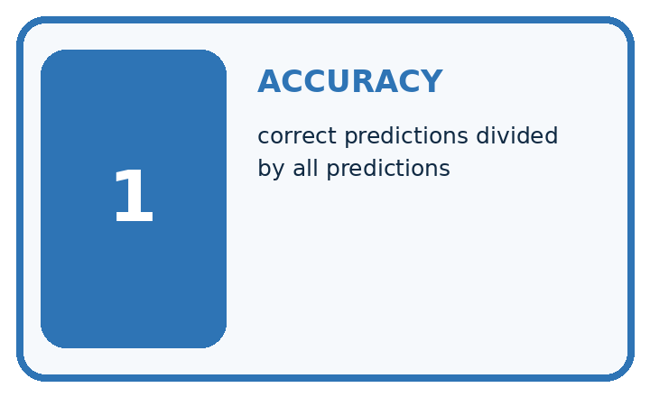
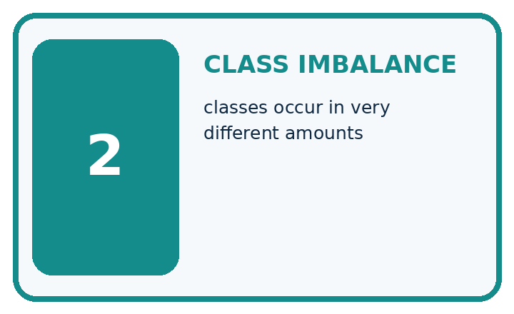
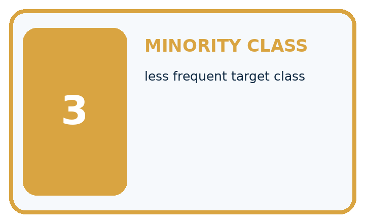
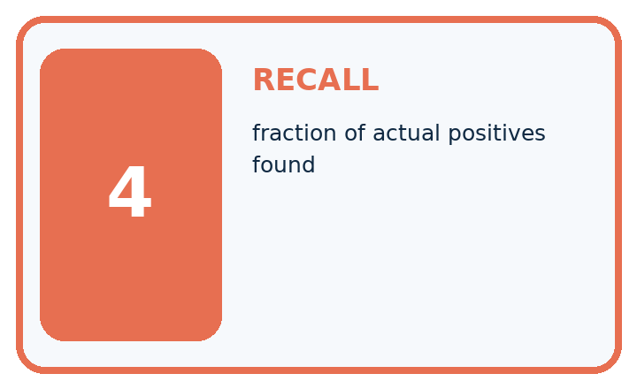
| Term | Precise meaning | My ML example |
|---|---|---|
| accuracy | correct predictions divided by all predictions | |
| class imbalance | classes occur in very different amounts | |
| minority class | less frequent target class | |
| recall | fraction of actual positives found |
Repair the claim using a definition, calculation, or test record:
Words used in the closer explanation
| Word | Meaning |
|---|---|
| Class imbalance | Unequal numbers of examples in different classes |
| Majority baseline | A rule that always predicts the most common training label |
| Class-specific correct fraction | Correct predictions for one reference class divided by the number of examples of that class |
| Balanced accuracy | The average of the class-specific correct fractions with equal weight for each class |
Student lesson · 6 of 17
Follow a worked example
WORKED EVIDENCE
Reason Step by Step
Predict first. Then check each step. A correct answer without visible evidence cannot be audited.
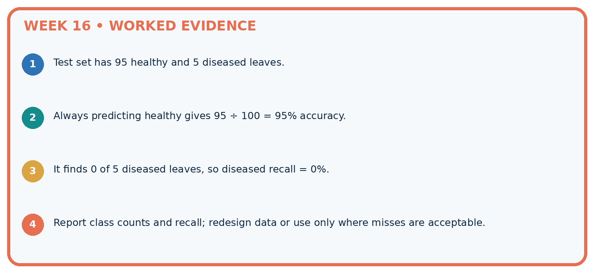
STEP 1 Test set has 95 healthy and 5 diseased leaves.
STEP 2 Always predicting healthy gives 95 ÷ 100 = 95% accuracy.
STEP 3 It finds 0 of 5 diseased leaves, so diseased recall = 0%.
STEP 4 Report class counts and recall; redesign data or use only where misses are acceptable.
Recalculate, retrace, or restate the evidence independently:
A closer explanation
Same overall score different class results
Balanced accuracy is a metric choice, not a repair to the classifier or a guarantee of safety. It gives classes equal influence in this summary; it does not encode the actual consequences of false alarms and missed cases. Four blocked evaluation examples are also too few for a strong general claim.
Learn from the worked case
Cover the result before checking it. Say what is given, choose the procedure, and follow one step at a time. Then uncover the result and explain your first mismatch. Ask why a step is allowed, not only what number it produces.
A pictorial worked case: Accuracy and Imbalance
Show how a common healthy class can hide complete failure to detect spotted leaves.
The facts we will use
Toy evaluation has 18 healthy and 2 spotted leaves. Always-healthy predicts all healthy. A candidate hasTP2, FN 0, FP 3, TN 15.
All inputs and outcomes in this worked example are invented classroom data; no real model run is claimed.
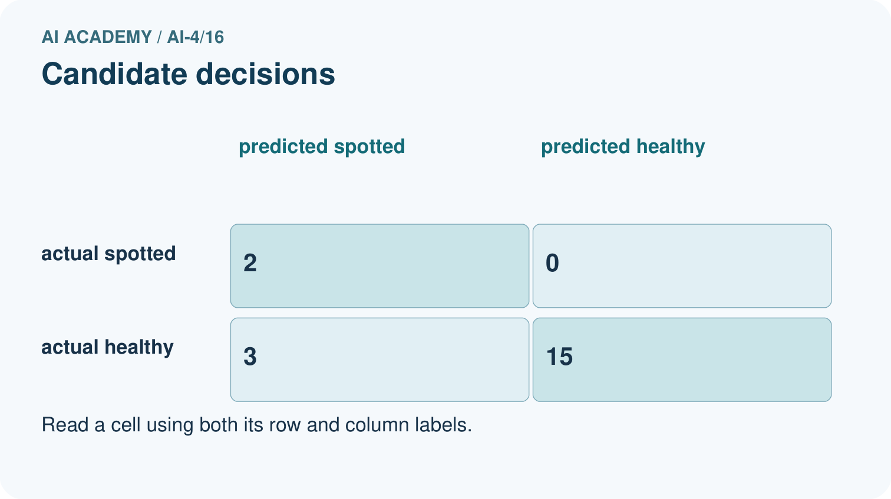
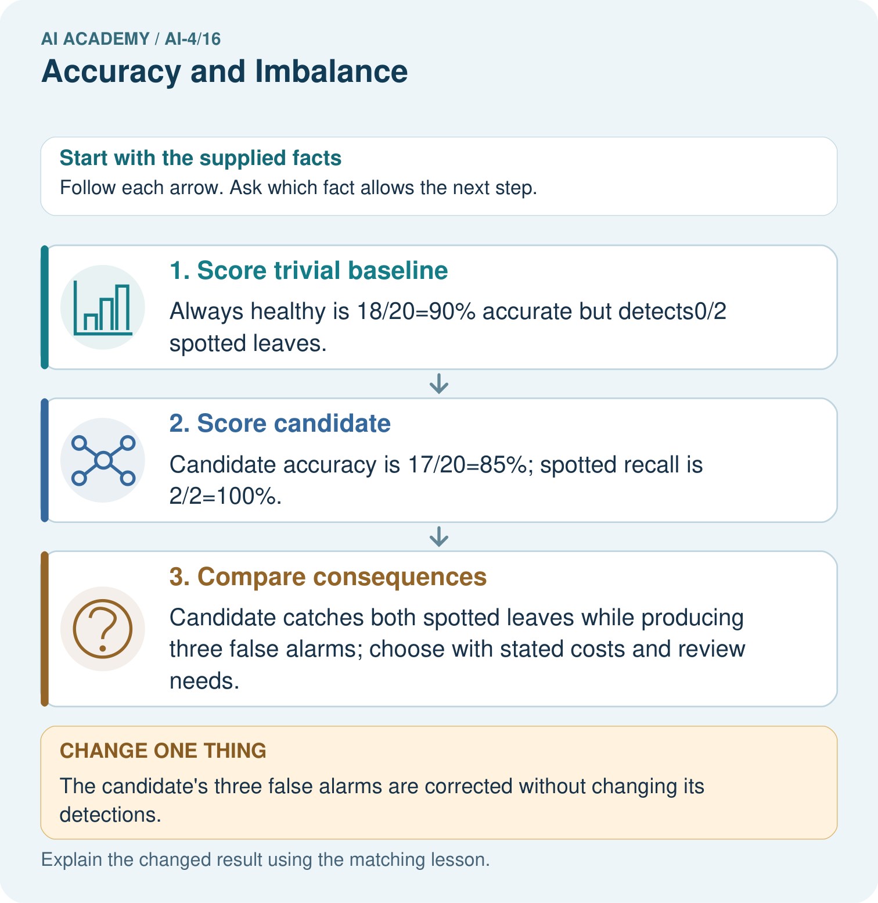
Read the picture one step at a time
Why this result follows
Read the picture in order. Candidate catches both spotted leaves while producing three false alarms; choose with stated costs and review needs. The arrows show which recorded input or intermediate result each decision uses. Explain the deciding step aloud before checking the changed case; pointing to the final answer alone does not show how it follows.
What this example does not establish
Perfect performance on twenty supplied cases does not demonstrate dependable detection in other plants or settings.
Read the labelled picture: Why can the 90% baseline still be unsuitable for a detection task? Point to the relevant step in the picture, then write the changed result and the rule or evidence that supports it.
Change one thing: The candidate’s three false alarms are corrected without changing its detections. Predict the result before checking the explanation. What remains the same?
Student lesson · 7 of 17
Find and repair a mistake
ERROR DETECTIVE
Compare → Diagnose → Repair
Do not patch the answer. Find the earliest unsupported assumption, data problem, or experiment error.
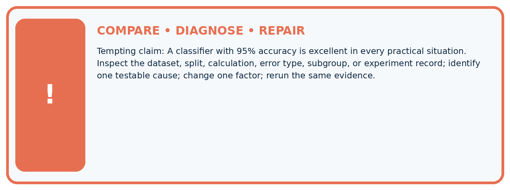
| Evidence record | Expected | Actual | Likely cause / next test |
|---|---|---|---|
| normal case | passes | ||
| boundary case | defined behavior | ||
| missing case | safe fallback | ||
| shifted case | measured limit |
Diagnose one cause and name the cleanest next experiment:
A closer explanation
Compare methods on the same appropriate evaluation examples and report the training-derived baseline. Include ordinary accuracy, each class denominator, false positives and false negatives. An equal-class summary adds information but cannot choose the acceptable tradeoff for the task. Keep development decisions separate from a final test.
A result of 4/4 correct blocked cases is 100 percent on those four examples, not proof of perfect future detection. If the evaluated set contains no blocked cases, it cannot measure blocked-case performance at all. Next week separates precision and recall by asking which denominator answers each question.
Student lesson · 8 of 17
Practise together
ML STUDIO
Specify Before You Run
A trustworthy result can be reproduced from the recorded data, code, settings, and evaluation rule.

Experiment record
QUESTION + intended use + success threshold
DATA version + grouped split + leakage check
CODE/preprocessing + features + model + settings + seed
METRICS + positive class + units + denominators
PREDICTIONS + errors + subgroup slices + limitations
HUMAN reviewer + release, revise, limit, or stop decision
Write the minimum record needed to reproduce today's result:
A closer explanation
Consider a separate illustrative set with 8 clear and 8 blocked cases. Suppose the same within-class fractions hold: the baseline matrix is [[8,0],[8,0]] and the candidate matrix is [[6,2],[0,8]]. Ordinary accuracy is now 50 percent versus 87.5 percent. Balanced accuracy remains 50 percent versus 87.5 percent. The class mix changed the overall score even though the within-class fractions stayed fixed.
This is an arithmetic comparison, not proof that a real classifier keeps the same behavior after a population change. Report sample size, class counts, full matrix and how the evaluation data was chosen. Do not remove inconvenient cases or duplicate rare evaluation cases just to improve a headline number. If training is resampled, keep that separate from evaluation and document it.
Practise with less help: Compare both class fractions
Use workbook W2 for the connected example “Accuracy and class imbalance”. First fill the input and rule boxes. Try the middle steps before asking for a hint. After a hint, try the next step yourself.
| Plan | Do | Check |
|---|---|---|
| What is given? Which rule or procedure applies? | Record each intermediate step. | Does the result follow? What remains unknown? |
Explain your trace to a partner. Your partner points to one step to check. Swap roles on the next case. Each person writes their own explanation.
Check your reasoning
Use the worked case for Accuracy and class imbalance. Proposed explanation: “High accuracy means both classes work well”. Decide whether this explanation is supported. Point to the step or supplied fact that decides; explain your repair if needed.
Answer on your own before discussion. If you are unsure, say which step you need help with.
Explain the picture
Why can the 90% baseline still be unsuitable for a detection task? Point to the relevant step in the picture, then write the changed result and the rule or evidence that supports it.
This is supported practice. Keep the separately named independent case for an attempt before feedback.
Student lesson · 9 of 17
Run the investigation
EVIDENCE LAB
Predict → Run → Calculate → Interpret
Keep the test conditions fixed, record every result, and change only one planned factor.
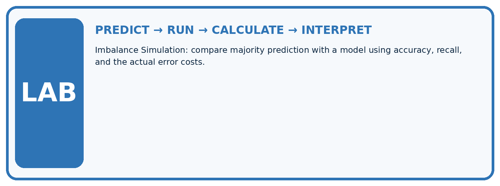
1. Write the hypothesis and expected evidence before running.
2. Imbalance Simulation: compare majority prediction with a model using accuracy, recall, and the actual error costs.
3. Run one normal, one boundary, one missing, and one shifted case.
4. Calculate the metric from raw counts or row-level errors.
5. Interpret what changed, what did not, and what remains unsafe or unknown.
| Case | Prediction | Actual | Calculation / evidence | Meaning / next test |
|---|---|---|---|---|
| Normal | ||||
| Boundary | ||||
| Missing | ||||
| Shifted |
Plan → try → check
Before trying: what do I expect, and why? While trying: which step could first go wrong? Afterwards: what did I actually observe, and what should change? Keep “not run” if you only traced the procedure.
Student lesson · 10 of 17
Build your understanding
MASTERY
From Knowing the Word to Owning the Idea
Move upward only when you can produce evidence without copying the example.

DEFINE Use all four terms precisely: accuracy, class imbalance, minority class, recall.
CALCULATE Reproduce the worked evidence with units and denominator.
TRACE Explain the data, code or decision path.
DIAGNOSE A classifier with 95% accuracy is excellent in every practical situation.
TRANSFER Solve a fresh dataset or model case.
IMPROVE Change one cause and rerun fixed evidence.
DEFEND State intended use, metric, limitation, and human responsibility.
Student lesson · 11 of 17
Connect your project
CUMULATIVE PROJECT
Responsible Plant Classifier
Every week adds one reviewable artifact to the same evidence-based capstone.
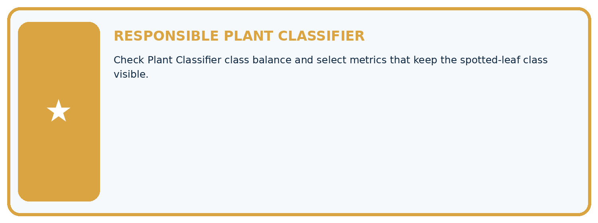
Which requirement or risk does this artifact address?
Which dataset, split, code, and metric version does it use?
What normal and shifted cases were tested?
What remains uncertain or weak?
What decision still belongs to a teacher or qualified human?
My evidence-linked project decision:
Evidence for your project
For your Responsible Plant Classifier, save the input, procedure, observed result and limitation of this check. Label this worked example as practice; use a different, previously unreviewed case when checking independent understanding.
Student lesson · 12 of 17
Show what you know
INDEPENDENT PROOF
Explain • Calculate • Transfer • Defend
Complete this with a fresh case after guided practice and compare it with the mastery criteria.
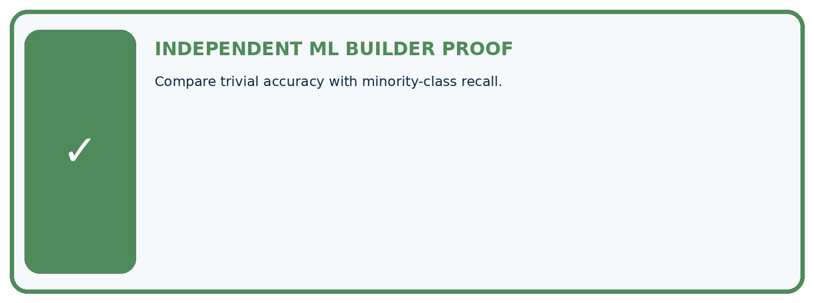
□ Define the task, feature/target roles, and intended-use boundary.
□ Show the calculation, code trace, or experiment record.
□ Test a normal case and one revealing boundary, missing, or shifted case.
□ Diagnose one failure without changing several factors at once.
□ Name a limitation, fairness concern, and the human-review action.
Independent evidence and defense:
My level: □ Not yet □ With one hint □ Independently □ I can teach and defend it
Student lesson · 13 of 17
Study a complete case
Week 16 Worked case
Use the supplied details to practise the weekly concept before attempting the independent question. This case extends the illustrated lesson.
The situation
A dataset has 95 healthy and 5 spotted. Model predicts healthy for all.
The question
Calculate and critique accuracy.
Worked explanation
95/100=95%, but spotted recall=0/5=0%. Majority performance hides the detection failure.
Explain it in your own words
Which detail supports the answer, and why does it matter?
Trace the supplied case visually
The majority can hide a detection failure
| Evidence or stage | Value or result |
|---|---|
| Healthy, predicted healthy | 95 |
| Spotted, predicted healthy | 5 |
A dataset has 95 healthy and 5 spotted. Model predicts healthy for all.
Calculate and critique accuracy.
95/100=95%, but spotted recall=0/5=0%. Majority performance hides the detection failure.
Student lesson · 14 of 17
Try a new case independently
Independent case: Changed independent case
Validation has90 healthy and10 spotted cases. Always-healthy predicts all healthy. Another model has TP7,FN3,FP8,TN82. Compare accuracy and spotted recall.
Attempt this case before feedback. Record any help. Earlier examples below are further practice; a case already practised with feedback cannot establish fresh transfer.
Week 16 Independent application
Close the worked explanation. Apply the idea to this different question without copying.
A classifier predicts healthy for all 100 plants; 95 are healthy and 5 diseased. Compute accuracy and diseased recall.
My answer, with a trace, calculation or supporting evidence
Create and test
Change one relevant detail. Predict the result before testing. Include a boundary or missing-information case when it helps reveal a limit.
My changed input and expected result
Connect to your project
Check Plant Classifier class balance and select metrics that keep the spotted-leaf class visible.
The evidence I will keep
Your teacher has the independent answer and scoring criteria. Complete the matching workbook week to keep your practice evidence together.
Transfer practice from the original programme
Model A is always healthy on 96 healthy and 4 spotted leaves. Model B finds 3 spotted but falsely flags 5 healthy. Compare accuracy and spotted detection.
Use feedback to improve
Attempt the independent case before hints. Record whether you worked alone, used a hint or followed a model. After feedback, fix the first unsupported step and explain why it changed. A later check uses a changed case, not a copied answer.
Student lesson · 15 of 17
Your lesson route
Start with this question: Show how a common healthy class can hide complete failure to detect spotted leaves.
| By the end, I can | How I will show it |
|---|---|
| Explain why overall accuracy can hide failure on a less common class | Explain the deciding step, show a trace or test, and state one limit. |
| Compare a training-majority baseline with class-specific results | Explain the deciding step, show a trace or test, and state one limit. |
| Calculate an equal-class average and report its limits alongside the confusion matrix | Explain the deciding step, show a trace or test, and state one limit. |
Remember → watch and explain → try with help → investigate → try independently → keep project evidence. Your teacher may spread this lesson across several classes.
Keep your first prediction. Compare it with what the evidence shows and explain any change.
Student lesson · 16 of 17
Finish and return
Close your notes. Explain this goal in your own words: Explain why overall accuracy can hide failure on a less common class
If you are unsure, return to the worked picture and explain one arrow. If you are ready, change an input or assumption and justify your prediction.
Save your workbook evidence. At the next review, try a different case before opening your old answer.
Student lesson · 17 of 17
Supported practice, repair and portfolio
Use this supported practice once, in the browser or on paper. Keep the reserved independent assessment for a separate first attempt before teacher feedback.
Show how a common healthy class can hide complete failure to detect spotted leaves.
Practice 1: explain the deciding evidence
Which labelled step matches this detail? Candidate catches both spotted leaves while producing three false alarms; choose with stated costs and review needs.
1. Compare consequences
2. Score candidate
3. Score trivial baseline
Hint if needed: Read the steps in the pictorial case. Match the supplied detail to the stage that performs or records it.
After your attempt, compare with the supported explanation: Compare consequences Candidate catches both spotted leaves while producing three false alarms; choose with stated costs and review needs. Read the picture in order. Candidate catches both spotted leaves while producing three false alarms; choose with stated costs and review needs. The arrows show which recorded input or intermediate result each decision uses. Explain the deciding step aloud before checking the changed case; pointing to the final answer alone does not show how it follows.
Practice 2: explain the deciding evidence
Changed-case practice: The candidate’s three false alarms are corrected without changing its detections. Which conclusion is supported by the supplied facts?
1. Candidate accuracy becomes20/20 with spotted recall still100% in this toy set.
2. This one example guarantees correct results for every future input.
3. We can decide the result without examining the changed input or the procedure.
Hint if needed: Use the changed condition and the deciding step in the pictorial trace. The answer must say what follows from those facts.
After your attempt, compare with the supported explanation: Candidate accuracy becomes20/20 with spotted recall still100% in this toy set. False alarms move from FP to TN; neither TP nor FN changes.
Repair a missing building block
Review Confusion Matrix (ai-4/15). Goal: Build a labelled confusion matrix from matched reference and prediction pairs. Short practice: Why is adding TP alone without reducing FN an incorrect revision? Point to the relevant step in the picture, then write the changed result and the rule or evidence that supports it.. Return to this week and explain what you changed.
Review Train a Classifier (ai-4/13). Goal: Connect training-only scaling and neighbour prediction in one pipeline. Short practice: Which pipeline record would help another team reproduce the result? Point to the relevant step in the picture, then write the changed result and the rule or evidence that supports it.. Return to this week and explain what you changed.
Review Baselines First (ai-4/10). Goal: Fit a majority label baseline using training labels only. Short practice: Can the candidate’s training accuracy replace this validation comparison? Point to the relevant step in the picture, then write the changed result and the rule or evidence that supports it.. Return to this week and explain what you changed.
Predict, run and debug
The browser lab lets you edit the supported Python examples already included in this lesson. Predict first, run, inspect the actual output or error, change one input, then run again. Keep code, predictions, actual results and a reasoned revision together. On paper, label your result as a trace rather than an execution.
Keep your completed work
Use Download completed work in the hosted lesson to export your answers, reflections, practice feedback and code-run evidence. Open the HTML copy to read or print it. Drafts stay in this browser when storage is available; clear drafts on a shared device.